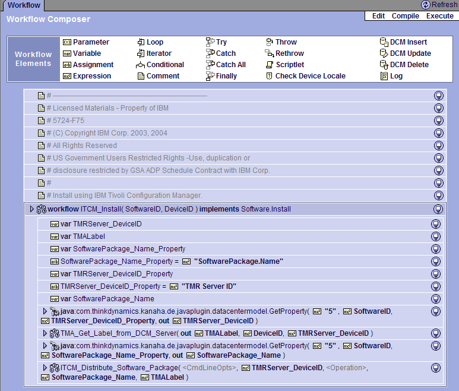

| Tool Mentor: How to Use Tivoli Provisioning Manager to Plan a Release Rollout |
 |
|
| Related Elements |
|---|
This tool mentor is derived from the IBM Tivoli Unified Process (reference TM070). ContextOne activity in Release Management is Plan a Release Rollout. In this activity, the details -- concerning specifically what will be done during rollout -- are generated. This information includes:
DetailsThe IBM Tivoli Provisioning Manager product is a resource management solution for both corporate and Internet data centers that provide automated provisioning capability. The product coordinates data center assets to provision based on predefined business processes. Prior to planning a release rollout, Tivoli Provisioning Manager must be populated with information that describes the environment that is being managed. To achieve this, Tivoli Provisioning Manager gives data center administrators the ability to model their data center infrastructure environments. Included within this model are both physical assets (for example servers, routers, switches, and load balancers), as well as logical assets (software, IP subnets, and VLANS). After population of this information is complete, it is possible to execute a variety of automations against this dataset that impact change on that particular device. Changes can range in scope anywhere from a configuration change to a hardware element change within a server, to the installation of software on a particular endpoint. Regardless of the type of change, the method by which these changes are enacted (that is, the recipe for these changes) is encapsulated within a concept called workflows. A workflow is a simple program -- with a number of constructs -- that is used to manage a data center. It can be comprised of a number of base steps that are intended to carry out a specific task, or it can include a large number of steps that include other workflows, Tivoli Provisioning Manager data center model queries, Sun™ Java™ plug-ins, and scripts that are run on target machines. For example, modification to data center infrastructure (route changes, VLAN assignments), configuration and allocation of servers (software installation and configuration), and specific command actions (reboot server, power off device, install image) can all be accomplished using workflows. In this way, workflows make it possible to build a powerful library of reusable processes that can be assembled to meet any data center process requirement. Tivoli Provisioning Manager workflows allow data center administrators and operators to plan a release rollout automation (or action) against a specific device successfully. These actions can be executed in response to a specific condition occurring in real-time, based on a schedule or, finally, executed at run-time through manual administrator intervention.  Figure 1 : An example of a Tivoli Provisioning Manager workflow By referencing information that is stored within the data center model (DCM) -- which is the database that contains the modeled infrastructure component information that represents the data center assets -- workflows provide an intuitive and simple way to carry out administrative tasks. Workflows allow administrators to encapsulate future actions to be carried out across the infrastructure into a recipe format using data gleaned from the data center model. Rollback scripts, precautions, and validity checking are a few of the capabilities that are offered within workflows to provide successful data and asset protection should a problem occur. By carefully building safe release rollout plans, safeguards are put in place to gracefully handle any errors that might result should an error occur during execution of the automation.
Following a successfully completed workflow procedure, the DCM is updated to reflect the change against the
infrastructure. Operators and administrators can view the changes using the Web management console interface.
Execution results are stored within event logs, providing a historical audit trail of previous workflow
executions.
|